Что вы подразумеваете под геймплеем?
Концепция редактора проста: он должен предоставить вам доступ к объектам и логике для создания увлекательного игрового процесса. В этом разделе мы рассмотрим, как мы можем использовать данные для выполнения логики и иметь возможность хранить переменные, которые отслеживают изменения и состояние вашей игры. По сути, это основное требование для создания любого игрового процесса, если вы хотите выйти на массовый рынок.
Начнем с того, что одним из основных способов хранения переменных на дизайнерской стороне редактора является система под названием Game Tokens, и они станут основой этого упражнения. Запись будет храниться внутри Flow Graph, а также мы будем сохранять ее на диск в виде файла .xml, чтобы продемонстрировать гибкость системы.
Эти типы элементов будут рассмотрены в этом уроке, который позволит вам начать объединять сущности для создания привлекательной игровой механики.
Настройка нашего узла DisplayMessage и ввода
Вам необходимо выполнить следующие шаги, указанные ниже, чтобы начать печать информации в окне просмотра и ввод для управления объектом:
- Чтобы определить, где появляется игрок, добавьте Сущность точки возрождения и добавьте Flow Graph названный gameplayQuickstart.
- Подключиться Игра:Начать's Выход к Спавн ввод SpawnPoint сущность.
- Добавьте оба Примитивная коробчатая кисть и Триггер приближения на сцену. Коробка будет использоваться в качестве платформы или пункта назначения, куда можно будет добраться после появления.
Выберите Триггер приближения, перейдите к своему графику, щелкните правой кнопкой мыши в пустом месте и выберите Добавить выбранный объект. Подключите Выход из Игра:Начать узел к Включить ввод ProximityTrigger узел. - Теперь, когда мы стандартизировали начало игры, мы можем добавить Отладка DisplayMessage узел для запуска сообщения «Успех», когда Войти выходной порт срабатывает из Триггер приближения.
- Когда заходишь в игру(Ctrl+Г) вы должны заметить, что вы не только начинаете именно там, где находится источник SpawnPoint сидит, но также вы должны увидеть сообщение в вверху слева распечатка «Успеха» в белый.
- Чтобы сделать еще один шаг, мы подключим Светлая сущность к InputKey чтобы включить свет в вашей сцене при подключении к устройству игрока (клавиатура, контроллер, VR). Перейти к Создать объект -> Устаревшие объекты -> Источники света -> Свет и перетащите его на сцену.
- Чтобы лучше видеть свет, измените Диффузный цвет к Зеленый а затем увеличить Диффузный множитель чтобы 150. Обязательно перетащите его немного вверх, чтобы увидеть достаточно света.
- Добавить его на график, а затем добавьте Отладка: InputKey мы упоминали ранее.
- Назначьте P-ключ тоже InputKey узел и добавьте Логика: секвенциализатор узел посередине из них.
- Подключите Прессованный выходной узел в В входной порт Секвенциализатор а затем накормить первых двух Выход порты в Отключить и Включить щели света.
- Зайди в игру(Ctrl+Г) и переключите П ключ, включи свет Выкл. и Вкл..
Шаг 1
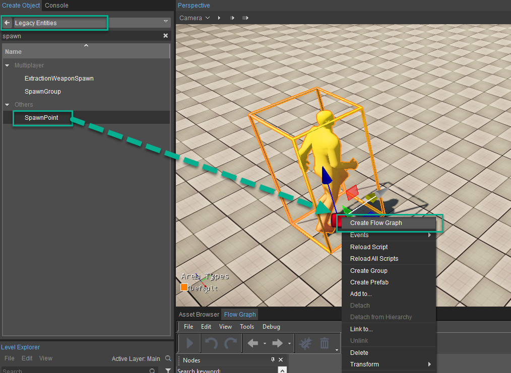
Шаг 2
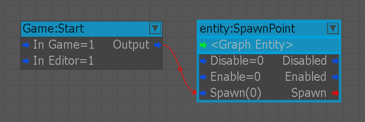
Шаг 3-1
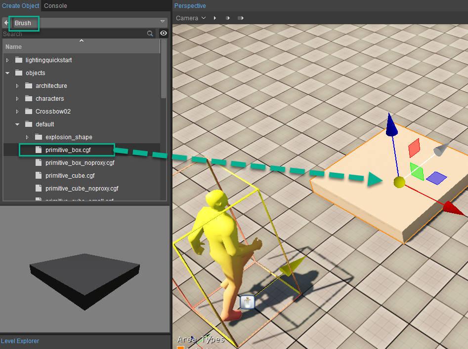
Шаг 3-2
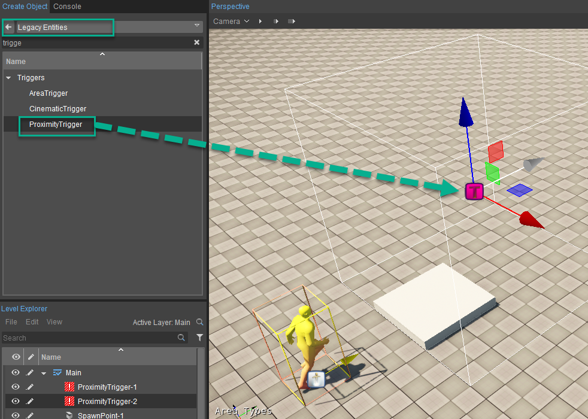
Шаг 4
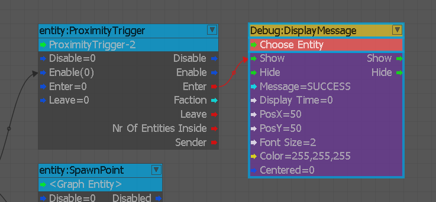
Шаг 5
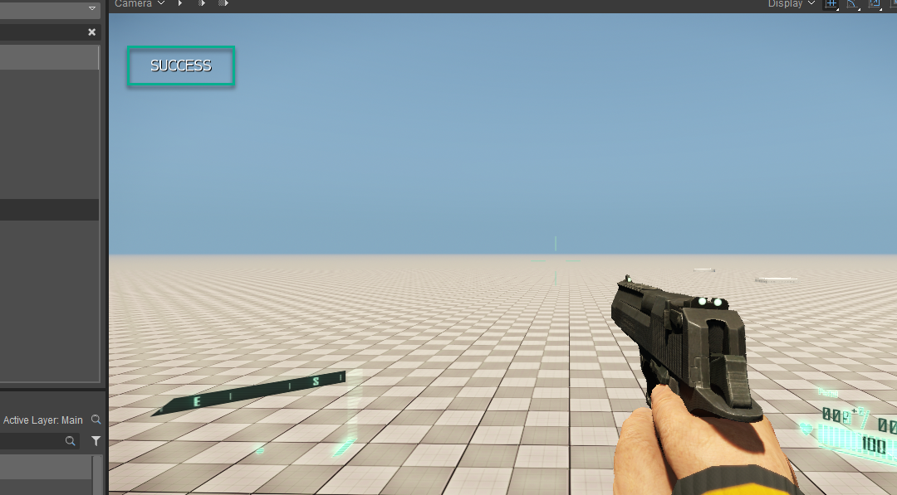
Шаг 6
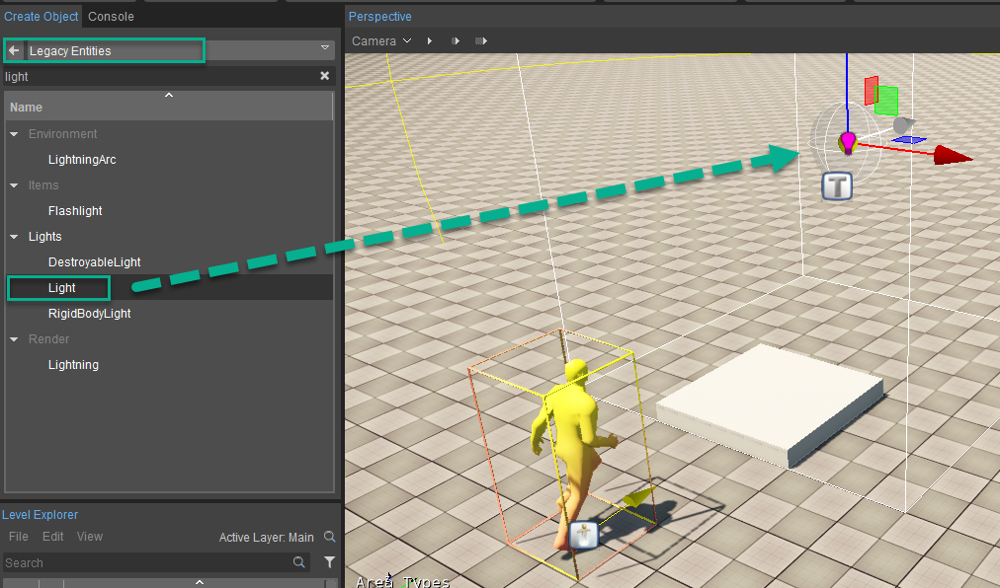
Шаг 7
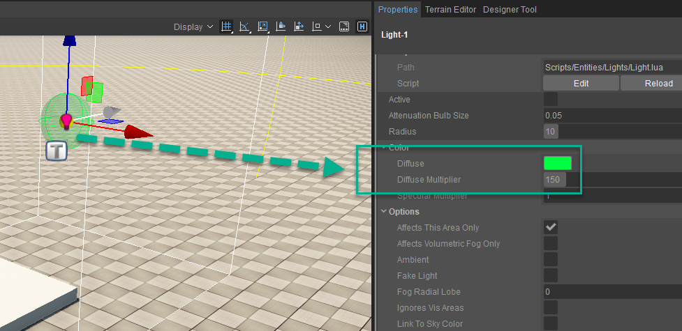
Шаг 8
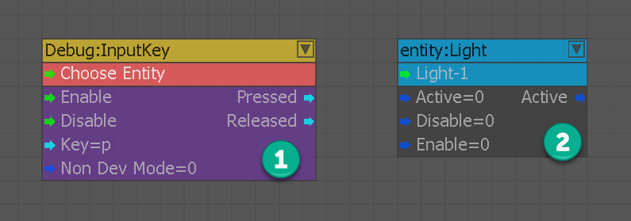
Шаг 9
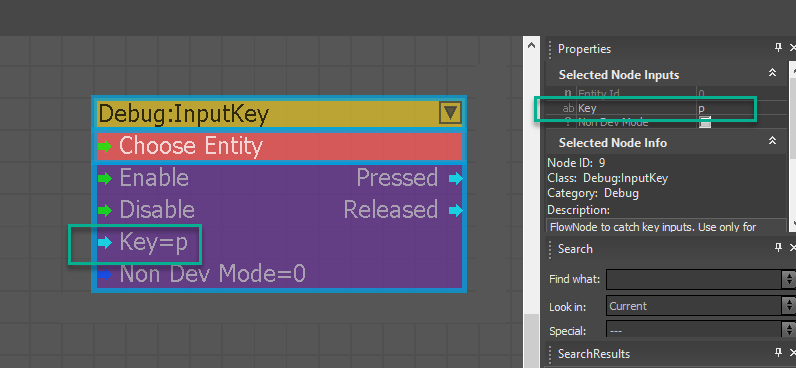
Шаг 10
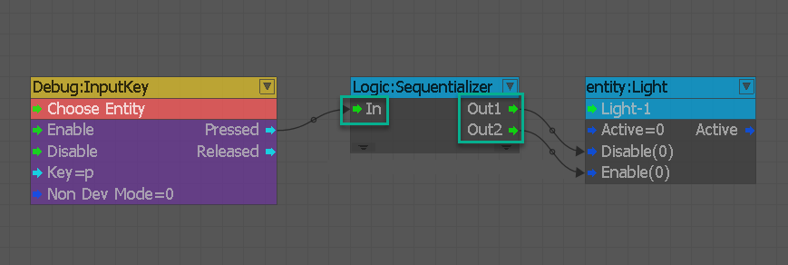
Окончательная настройка
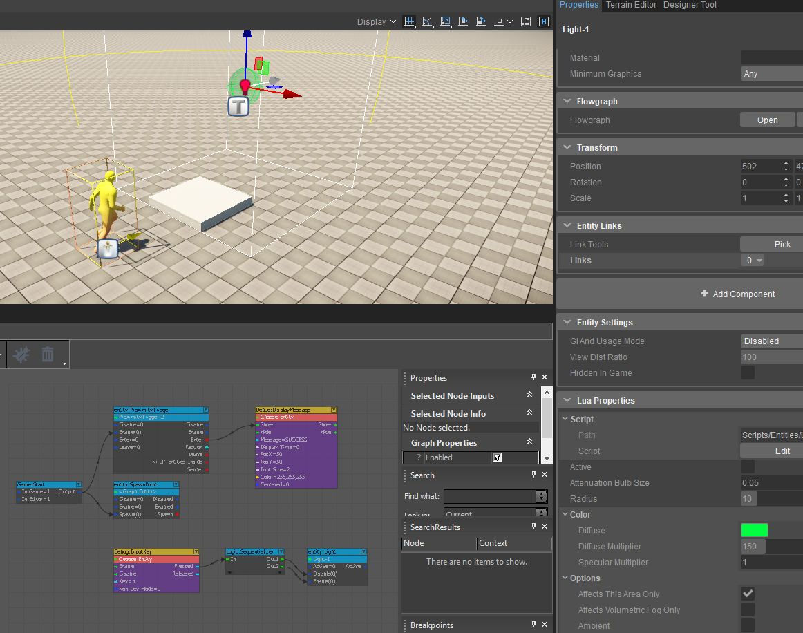